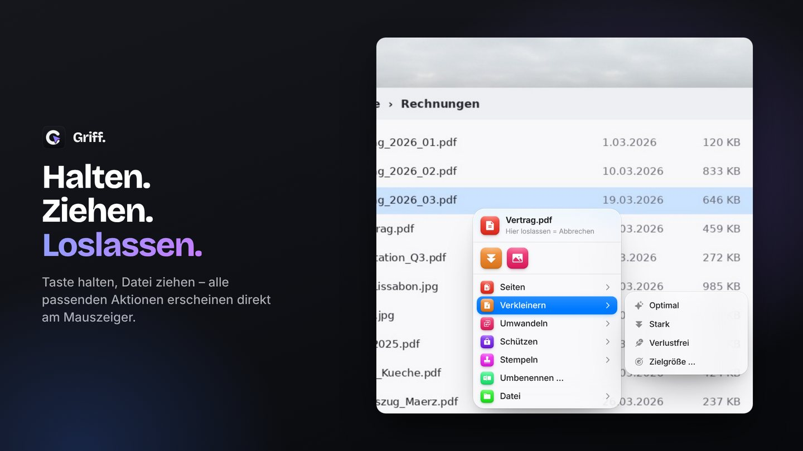
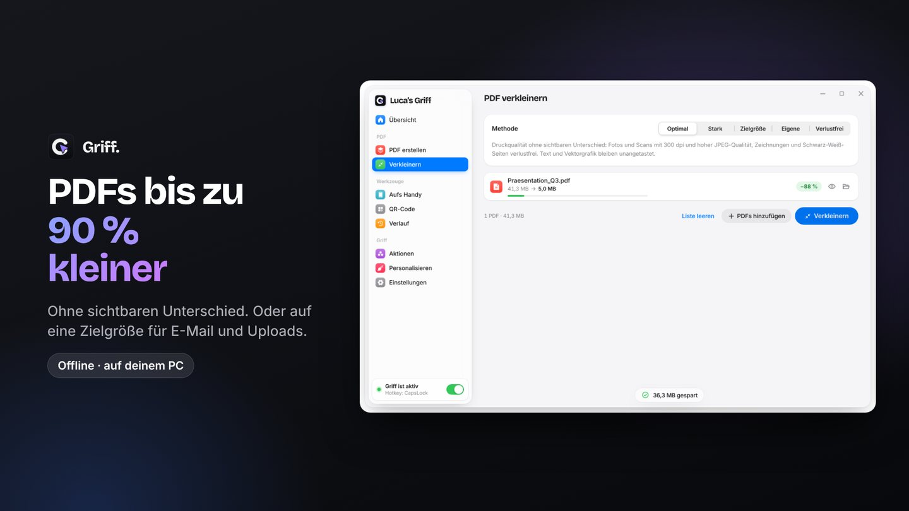
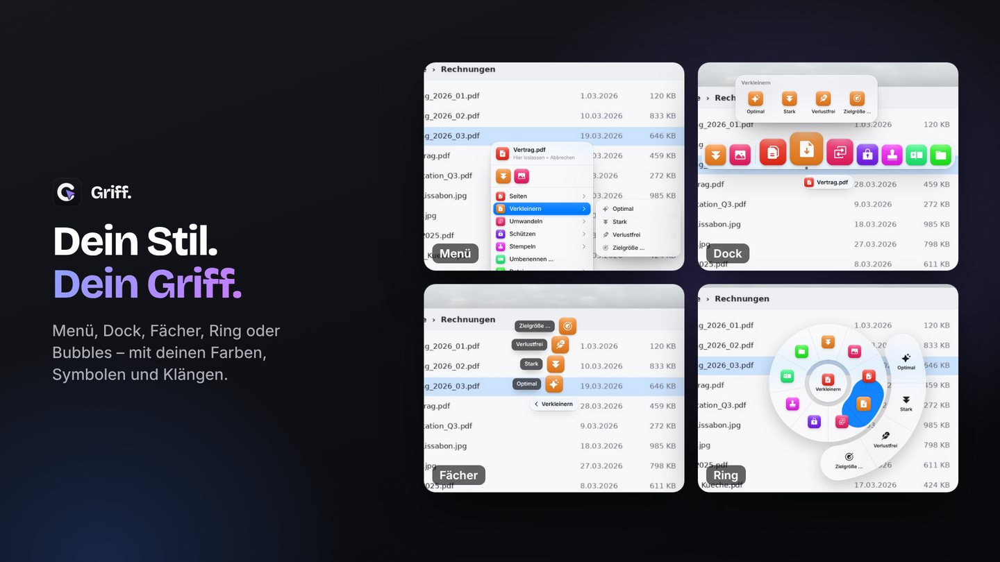
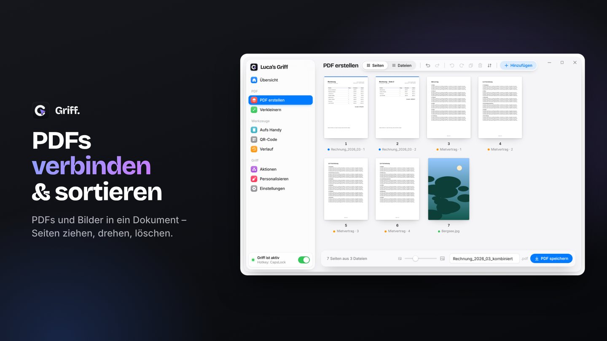
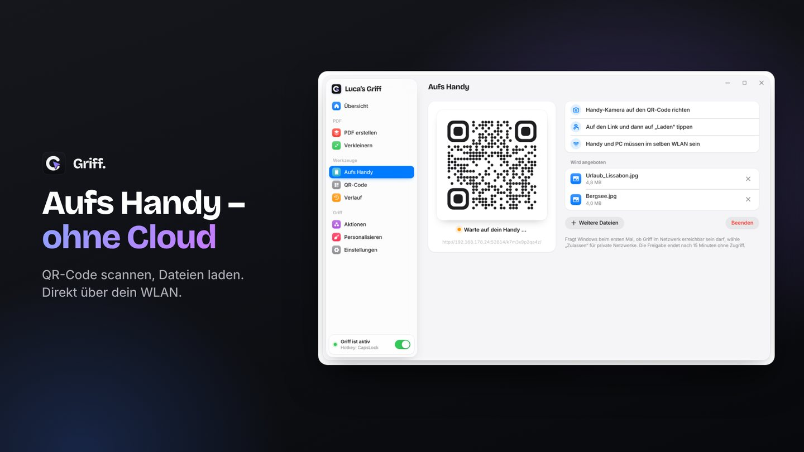

Halten. Ziehen.
Loslassen.
Halte eine Taste, zieh eine Datei – und alle passenden Aktionen erscheinen direkt am Mauszeiger. PDFs verkleinern, zusammenfügen, umwandeln, aufs Handy schicken. Ohne Umweg über ein Programmfenster.

Alles, was du mit Dateien ständig machst.
PDFs verkleinern
Bis zu 90 % kleiner ohne sichtbaren Unterschied – oder genau auf die Größe, die ein Upload-Portal verlangt.
Zusammenfügen & sortieren
PDFs und Bilder zu einem Dokument, Seiten ziehen, drehen und löschen.
Umwandeln
PDF zu JPG oder Word, Bilder in jedes Format, als PDF – mit einer Bewegung.
Aufs Handy
QR-Code scannen, Dateien laden. Direkt über dein WLAN, ohne Cloud.
Schützen & stempeln
Passwort setzen, Seitenzahlen und Wasserzeichen einfügen, Metadaten entfernen.
Ganz deins
Fünf Stile am Mauszeiger, deine Farben und Klänge, deine Favoriten vorne. Auf Wunsch „Luca’s Griff“.
Einmal 4,99 €. Kein Abo.
Keine Adminrechte nötig – perfekt für Firmen-Laptops. Kein Konto, keine Cloud: Deine Dateien verlassen deinen PC nicht.




Fragen
Brauche ich Adminrechte?
Nein. Griff installiert sich aus dem Microsoft Store nur für deinen Benutzer und läuft ohne Adminrechte – auch auf verwalteten Firmen-PCs, sofern der Store erlaubt ist.
Werden meine Dateien hochgeladen?
Nein. Alles passiert auf deinem PC. Bei „Aufs Handy“ lädt dein Handy die Dateien direkt über dein WLAN – nichts geht über das Internet.
Welche Taste muss ich halten?
Standardmäßig CapsLock. Du kannst jede andere Taste oder eine Maustaste wählen.
Funktioniert Word zu PDF und PDF zu Word?
Ja, wenn Microsoft Office auf deinem PC installiert ist – Griff nutzt dann dein Office.
Support
Etwas klappt nicht oder du hast eine Idee? Schreib uns: info.griff@web.de. In Griff findest du unter Einstellungen → Hilfe das Fehlerprotokoll – häng es gern an.